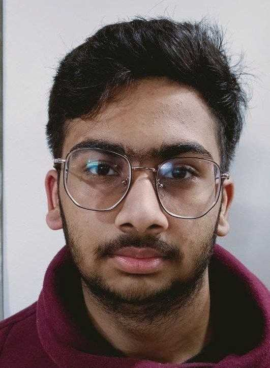

Devesh Modi

Objective
Pursuing computer science with experience in full-stack development.
Looking forward to learn and improve myself through guidance of
professional team members.
Education
- Studied at Swaraj India Public School, Kanpur - (2007-2022)
- Passed 10th standard with 93.5%
- Passed 12th standard with 92.7%
-
Pursuing Baccalaureate in Technology in Computer Science at
Indian Institute of Information Technology, Pune with current
CGPA - 8.0
Skills
- Full-stack development
- Git
- Github
- HTML
- C
- C++
- Java
Achievements
- 2* at Codechef
- 914 rating at Codeforces
Co-Curricular Activities
Contact